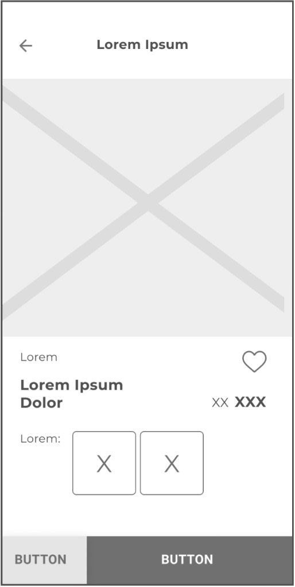
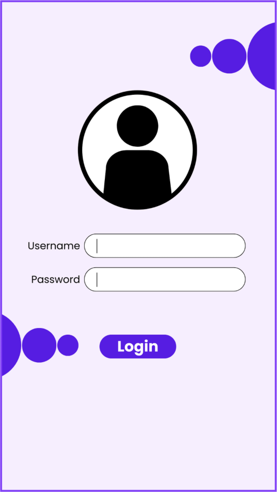
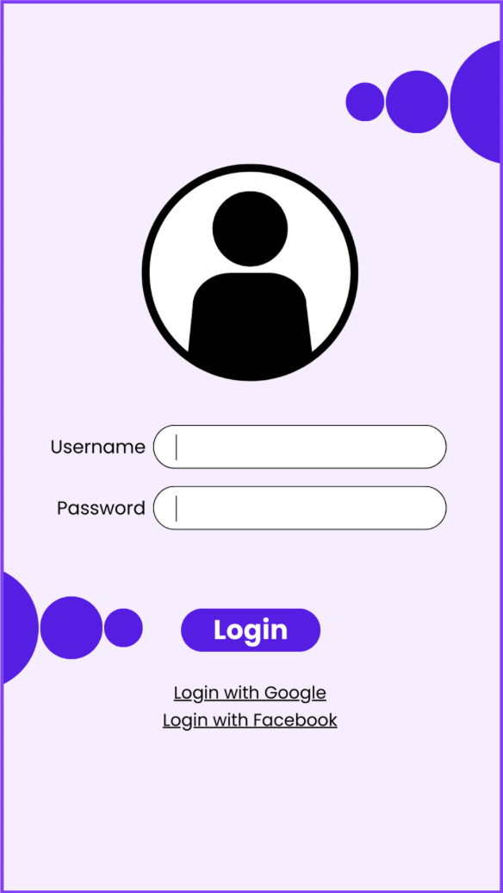
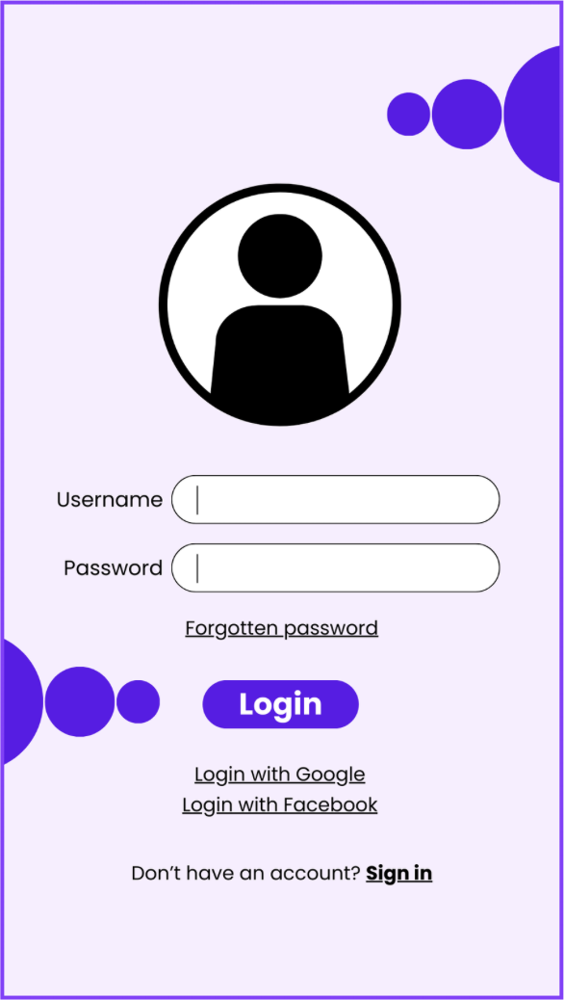
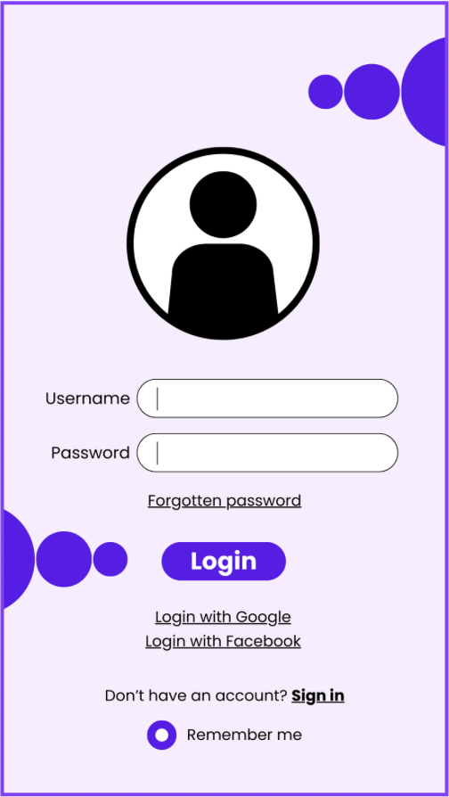

Il wireframe è uno strumento fondamentale nella UX design che rappresenta una bozza visiva
della struttura di un'interfaccia. Serve per definire il layout, la gerarchia delle informazioni e la
disposizione
degli elementi senza concentrarsi ancora su dettagli estetici come colori, immagini o tipografia.
I
wireframe sono utili per testare il layout e l'usabilità in fasi preliminari, e se utilizzati male possono
portare
a un prodotto finito che manca di alcune funzionalità essenziali.

Questa è l’interfaccia di una schermata di login che include solo le funzionalità principali, ma risulta
comunque priva di alcune componenti essenziali per garantire un'esperienza realmente fruibile.
Questo problema è una delle conseguenze più comuni della mancata realizzazione di un wireframe o della sua
creazione in modo superficiale.

Ad esempio, un sito o un’app potrebbero offrire diverse opzioni di accesso, tra cui le più comuni sono
il login con Google e il login con Facebook.
Molti utenti oggi preferiscono questi metodi, poiché
permettono di inserire automaticamente le proprie informazioni personali, semplificando il processo
di accesso.
Un altro problema comune che gli utenti riscontrano durante il login è la dimenticanza della password,
spesso a causa del gran numero di credenziali da ricordare.
Per questo motivo, è fondamentale
offrire un'opzione di recupero tramite un pulsante dedicato, posizionato in modo ben visibile
all'interno della schermata.
Un'altra opzione spesso trascurata è l'inserimento di un pulsante dedicato alla registrazione (sign up).
Sebbene possa sembrare ovvio che per accedere a un sito per la prima volta sia necessario registrarsi,
può capitare che l'utente arrivi direttamente alla pagina di login.
Per questo motivo, è essenziale
offrirgli la possibilità di creare un account in modo chiaro e immediato.

Un'opzione non indispensabile, ma che semplifica l'accesso quotclassiano al sito, è la possibilità di
selezionare una casella per salvare i dati di accesso, evitando così di dover inserire le credenziali
a ogni utilizzo.
Questa funzione può contribuire a migliorare l’esperienza utente e favorire la
fidelizzazio.

Infine, è fondamentale includere una freccia che dalla schermata di login riporti alla home o alla
schermata precedente.
È importante offrire all'utente la possibilità di scegliere se e quando
effettuare il login, o di poter consultare altre informazioni prima di farlo.